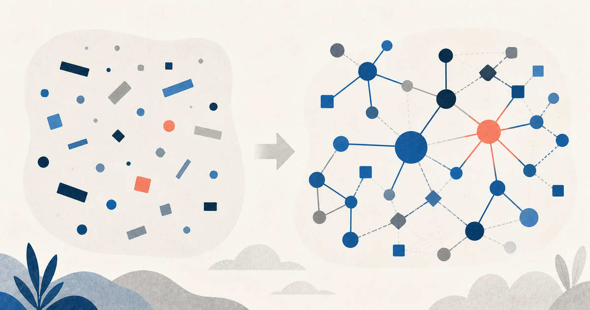

Серия об агентной разработке · Часть 2 из 2
Почему grep недостаточно AI-агенту: Code Property Graph простыми словами

Когда AI-агент меняет большой репозиторий, ему недостаточно найти функцию по имени.
Допустим, агент увидел process_payment. Чтобы безопасно изменить её, нужно понять:
- кто её вызывает;
- какие данные в неё попадают;
- при каких условиях выполняется вызов;
- какие модули от неё зависят;
- какие тесты проходят через этот путь;
- не нарушит ли изменение архитектурные границы.
Текстовый поиск отвечает: «где встречается эта строка?»
Code Property Graph позволяет задавать другой класс вопросов: «может ли пользовательский ввод пройти через три функции и попасть в опасный SQL-вызов?» или «может ли доменный модуль обратиться к базе данных в обход application layer?»
Сначала — что такое граф кода
Граф состоит из узлов и связей.
В коде узлами могут быть файл, функция, переменная, условие, вызов или литерал. Связи объясняют, как эти элементы относятся друг к другу.
Один и тот же фрагмент программы можно рассматривать сразу в нескольких представлениях:
AST — из чего состоит код
CFG — по каким путям идёт выполнение
Call graph — кто кого вызывает
Data flow — куда движутся значения
Dependency graph — от чего зависит компонент
Code Property Graph, или CPG, связывает эти представления в одну модель.
AST: форма кода
Возьмём выражение:
total = price * quantityУпрощённое абстрактное синтаксическое дерево выглядит так:
Assignment
├── Name: total
└── Multiply
├── Name: price
└── Name: quantity
AST позволяет увидеть, что перед нами присваивание, внутри которого находится умножение двух имён. Оно помогает искать конкретные конструкции, аргументы вызова, операторы и вложенность.
Но AST почти ничего не говорит о том, какая ветка выполнится и откуда пришли значения price и quantity.
CFG: возможные пути выполнения
Control Flow Graph показывает переходы управления:
if amount > 0:
approve()
else:
reject()В графе появится условие и две возможные ветки. Это позволяет находить недостижимый код, пропущенную обработку ошибок и пути к опасной операции.
Важно: CFG — не граф вызовов. CFG показывает порядок и ветвление исполнения, а call graph связывает функции.
Call graph: кто кого вызывает
def checkout(request):
user = authenticate(request)
order = create_order(user)
return charge(order)Call graph добавит связи:
checkout → authenticate
checkout → create_order
checkout → charge
По такому графу можно оценить область влияния изменения, найти точки входа, циклические вызовы и центральные функции.
Однако статический call graph всегда является приближением. Полиморфизм, dependency injection, рефлексия и динамические импорты могут породить несколько возможных целей вызова или скрыть часть связей. Поэтому точнее говорить «функция может вызвать», а не «всегда вызывает».
Data flow: куда движется конкретное значение
Рассмотрим небезопасный код:
query = request.get("q")
sql = "SELECT * FROM products WHERE name = '" + query + "'"
result = db.execute(sql)Нас интересует путь значения:
HTTP-параметр q
→ query
→ конкатенация SQL-строки
→ sql
→ db.execute
Data-flow анализ может связать источник пользовательских данных с опасным приёмником. После этого код можно исправить параметризованным запросом:
query = request.get("q")
result = db.execute(
"SELECT * FROM products WHERE name = ?",
(query,),
)Такой анализ используют для поиска injection-уязвимостей, утечек секретов, передачи персональных данных и нарушений обязательной валидации.
Dependency graph: архитектурные границы
На уровне модулей нас интересуют связи другого масштаба:
web → application → domain
→ infrastructure
Если domain напрямую импортирует драйвер базы данных, одного поиска по слову db может быть недостаточно. Вызов может быть спрятан за обёрткой или интерфейсом.
Комбинация AST, call graph и модульных связей позволяет проверять правила вроде:
- доменный слой не зависит от web;
- доступ к базе идёт только через разрешённый порт;
- публичный HTTP-handler не вызывает infrastructure в обход application layer;
- между пакетами нет циклов.
Что именно объединяет CPG
Классическая работа по Code Property Graph объединила три представления: AST, Control Flow Graph и Program Dependence Graph. Современные реализации обычно добавляют вызовы, типы, межпроцедурные связи и другие слои.
Технически CPG — ориентированный размеченный граф со свойствами:
- у узлов есть тип, имя, код, файл и позиция;
- у рёбер есть направление и тип связи;
- между двумя узлами могут существовать разные связи одновременно.
Например, один вызов может одновременно:
- быть дочерним узлом AST функции;
- находиться на определённом пути CFG;
- иметь ребро
CALLк другой функции; - участвовать в data-flow пути;
- принадлежать модулю с архитектурными ограничениями.
CPG не нужно целиком рисовать на экране. Граф большого репозитория будет слишком велик. Практическая ценность появляется, когда запрос возвращает небольшой объяснимый путь и строки исходного кода.
Как несколько графов отвечают на один вопрос
Возьмём правило: «код домена не должен напрямую обращаться к базе данных».
Проверка может выглядеть так:
- AST находит вызов метода доступа к данным.
- Call graph восстанавливает цепочку вызовов.
- Модульный граф определяет принадлежность вызывающей функции к
domain. - CFG проверяет, достижим ли этот вызов.
- Data flow показывает, какие значения попадают в запрос.
- CPG-запрос возвращает путь до конкретных строк как доказательство нарушения.
Именно композиция отличает CPG от продвинутого grep.
Зачем это AI-агенту
Большая языковая модель хорошо объясняет найденный фрагмент, но плохо заменяет детерминированный анализ всего репозитория. Даже большое контекстное окно не гарантирует, что в него попали все косвенные вызовы и архитектурные связи.
Я вижу полезное разделение труда:
- CPG или статический анализ строит карту и выполняет точный запрос.
- Агент получает не весь граф, а компактный путь с типами связей и строками кода.
- LLM объясняет риск, предлагает изменение и формирует план.
- После изменения анализ запускается повторно.
- Тесты и ревью подтверждают поведение и бизнес-смысл.
Так агент не просто предполагает, что изменение безопасно, а опирается на воспроизводимые технические доказательства.
Что CPG не умеет
Важно не превратить CPG в новую магию.
Граф может быть неполным из-за динамических вызовов, генерации кода, макросов или особенностей языка. Межпроцедурный анализ дорог, а устаревший граф опасен. Статический анализ также не знает бизнес-смысла операции.
CPG способен показать, что charge(order) вызывается после create_order. Но он не докажет, что списание денег разрешено в конкретном пользовательском сценарии.
Поэтому нужны два разных слоя доказательств:
Code graph:
как устроен код и какие технические правила он нарушает
Evidence graph:
какое требование реализовано, каким тестом проверено и где результат
Модель, которую стоит запомнить
Текстовый поиск находит совпадения.
AST понимает структуру.
Графы понимают отношения.
CPG позволяет задавать составные вопросы об отношениях.
Для агентной разработки это важный переход. Репозиторий перестаёт быть набором файлов, которые модель по очереди читает. Он становится проверяемой картой структуры, вызовов, потоков данных и зависимостей.
Но финальное доказательство корректности всё равно дают не графы сами по себе, а их сочетание с тестами, требованиями, ревью и работающим кодом.
Источники: исходная работа о CPG, документация Joern, доклад Михаила Савина, whitepaper CodeGraph.